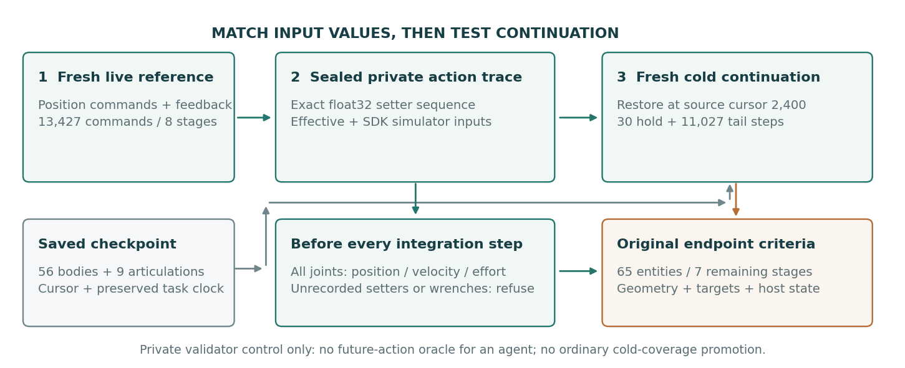

0.000 s
当前阶段—
源动作游标—
原生任务时间—
配对姿态差—
当前帧的瓶体与关节状态
保存坐标中的转动关节以弧度、滑动关节以距离记录。公开阶段状态为物理投影；研究侧完整归档另含运行参数、宿主、任务、随机性与身份。
PRIVATE ALL-CHANNEL ACTION CONTROL
V100 · 机制对照固定全部关节输入，核验冷重建余程
连续条件记录位置、速度与力矩目标，以及 SDK 实际发送前的底层输入；冷进程回放同一序列。该私有验证对照不向 Agent 提供未来动作，也不增加常规冷重建覆盖。输入一致不代表实现的物理力完全相同。

| 条件 | 源命令 | 实际动作步（含保持） | 完整余程 | 严格状态 | 录像 |
|---|
| 阶段 | 根位置最大差 mm | 根姿态最大差 ° | 保存关节坐标差 | 驱动状态 | 严格状态 |
|---|
LIVE REFERENCE → COLD RESTORE → FULL TAIL
同源进程对照从抓取前恢复，逐阶段验收完整余程
| 条件 | 保存边界 | 执行命令 | 初态 | 30步保持 | 严格终态 | 完整余程 | 录像 |
|---|
| 阶段 | 根位置最大差 mm | 根姿态最大差 ° | 保存关节坐标差 | 驱动状态 | 严格状态 | 同控制程序位姿 |
|---|
THREE CONDITIONS × THREE REPEATS
固定条件重复每一轮都保留参照、操作和负结果
| 轮次 / 条件 | 状态写回 | 配对保持 | 瓶体姿态差 | 瓶体位置差 | 全实体终态 | 录像 |
|---|
ONE EVIDENCE CHAIN
开发实验系统从封存协议到验收与回放
阶段保存、物理恢复、任务操作和事件计时分别验收。视频展示实际动作，数值结论来自独立读出的状态与接触日志。
GATES & RESOURCES
本次运行的检查结果
| 检查项 | 记录 | 结果 |
|---|
LONG TASK STATE
长任务状态覆盖
八个任务边界已保存完整登记状态；已验证的中途冷重建只有天平释放边界。携物对照、录像完成和单项写入成功，都不能增加冷重建覆盖率。
V93–V95 机制对照与保留负结果 →PRESERVED LABORATORY
历史场景与多机位视频继续保留
以下为历史轨迹的重建渲染回放，保留原有来源和验收范围。它们与上方新物理积分中采集的录像是不同记录。
全部六个场景、五个机位与原始来源 →